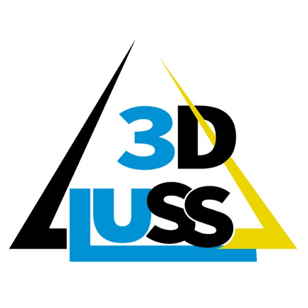

3DLUss
Digital Twin Viewer
Caricamento nuvola di punti...
3DLUss
Gemelli Digitali
☰
Caricamento...
🔧 Strumenti
▲
Misure
📏
Distanza
📐
Area
↕️
Altezza
📦
Volume
📊
Profilo sezione
✂️
Clipping
🗑️
Cancella misure
Visualizzazione
🎨
RGB originale
💡
Intensità
🌈
Elevazione
🏷️
Classificazione
🏛️
Schema BIM
Budget punti
⭐
Alta qualità
🌟
Bilanciato
⚡
Performance
Navigazione
⬆️
Vista Top
↗️
Vista Fronte
🔍
Mostra tutto
📐
Ortografica
Camera Tour
▶️
Avvia tour
⏹️
Ferma tour
Export
📸
Screenshot
💾
Misure JSON
📄
Misure DXF
🔗
Condividi
▶ Tour in corso...
3DLUss — Caricamento... · Rotella = zoom · Trascina = ruota · Tasto destro = pan
📊 Ultima misura